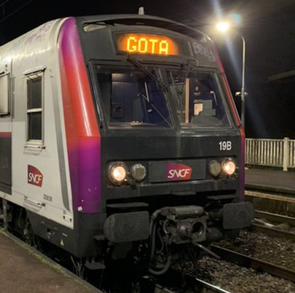

This project deals with generalizations and applications of optimal transport theory, with a particular focus on three topics: multi-marginal optimal transport, multi-population models, and multi-marginal entropic optimal transport.
The transition from the classical case to the multi-population setting carries difficulties that make these problems more delicate both theoretically and numerically. On the theoretical side, the main questions concern the dimension of the support of the solution, tools for analysing PDEs involving several populations, and the first-order expansion of the multi-marginal entropic regularized problem under mild assumptions on the cost. On the numerical side, the common objective across the three topics is to develop methods that overcome the so-called curse of dimensionality.